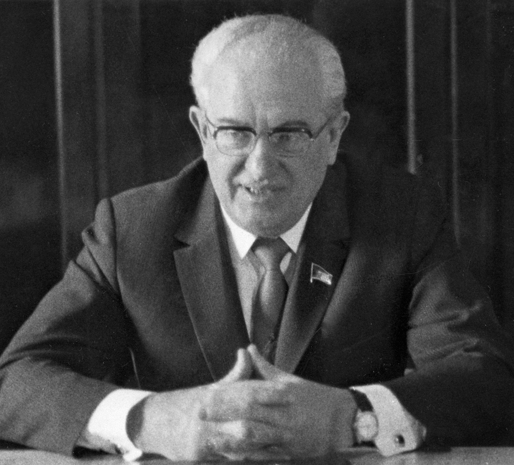

ソビエト
社会主義共和国連邦
(
しゃかいしゅぎきょうわこくれんぽう
)
建国から崩壊まで
年表
最高指導者一覧
国旗の由来
国歌の由来
top
ユーリ・アンドロポフ
生い立ち
 アンドロポフは1914年6月15日、ロシア
帝国
(
ていこく
)
スタヴロポリ地方ナグツカヤで生まれた。アンドロポフの家族に関する情報は
謎
(
なぞ
)
めいており、明らかになっていない点も多い。父はドン・コサックの家系の鉄道労働者であり、アンドロポフが幼少の
頃
(
ころ
)
の1919年にチフスに
罹患
(
りかん
)
し
亡
(
な
)
くなったとの説もある。1936年、ルイビンスク水運技術専門学校を卒業。ヴォルガ蒸気船などに勤めた。1939年、ソ連共産党に入党。ソ連共産党中央委員会
附属
(
ふぞく
)
高等党学校を卒業後の1940年からカレリアのコムソモール(共産主義青年同盟)第一書記を務め、フィンランドと国境を接するカレリア自治共和国を担当する。 独ソ戦が始まるとカレリアでパルチザン活動に入り、1944年にその首都ペトロザボーツクが解放されたのちは同市での党活動に移る。1947年、カレリア党第二書記に就任。住民にフィン人（カレリア人）を多く
抱
(
かか
)
え、ソ連・フィンランド戦争で一時フィンランド軍の
占領
(
せんりょう
)
を受けるなど複雑な事情を
抱
(
かか
)
えていた地域で指導者として政治的力量を認められた。
概要
ソビエト
連邦
(
れんぽう
)
の政治家、軍人。ブレジネフの死後はソ連共産党中央委書記長、最高会議幹部会議長として同国の最高指導者の地位にあった。党中央委第二書記、国家保安委員会（KGB）議長、
駐
(
ちゅう
)
ハンガリー人民共和国ソ連大使を歴任。軍の階級は上級大将。詩人としても知られている。 長らく秘密警察のトップたるKGB議長を務めた。書記長に就任後はブレジネフ時代に
蓄積
(
ちくせき
)
された
停滞
(
ていたい
)
と
腐敗
(
ふはい
)
の
一掃
(
いっそう
)
・労働規律の強化に乗り出したものの、就任半年後に病に
倒
(
たお
)
れ十分な成果を収められなかった。しかしアンドロポフの構想の一部は、自らが目を
掛
(
か
)
けて引き立ててきた同郷の
後輩
(
こうはい
)
でもあるミハイル・ゴルバチョフに
引
(
ひ
)
き
継
(
つ
)
がれた。
経済政策
アンドロポフは書記長就任後、
汚職
(
おしょく
)
に対しての
綱紀粛正
(
こうきしゅくせい
)
に着手した。ソ連経済は
莫大
(
ばくだい
)
な軍事費によって不安定化し、問題を
抱
(
かか
)
えているということをアンドロポフはよく知っていた。そこでアンドロポフは、それを正すために
汚職
(
おしょく
)
と「
闇
(
やみ
)
経済」との
闘
(
たたか
)
いを始めた。
闇
(
やみ
)
経済はブレジネフ時代の後期に
蔓延
(
まんえん
)
し出していた。アンドロポフは演説の中で「
私
(
わたし
)
たちは失った時間を取り
戻
(
もど
)
さなければいけない」と強調した。ソ連経済の
停滞
(
ていたい
)
に対する危機感をあらわにしたと同時に、
強烈
(
きょうれつ
)
にブレジネフを批判したのである。ソ連経済立て直しのために
抜本的
(
ばっぽんてき
)
な手を打たなければならないというのが経済関係者の共通の
認識
(
にんしき
)
であった。そして、アンドロポフ政権
発足
(
ほっそく
)
とともに、かつて見られないほど経済改革を求める提案が出された。製品を入れる木箱や細々とした道具類まで作る
巨大
(
きょだい
)
工場を細分化し、効率のよいミニ工場を目差すべきだとの論文から、タクシー
等
(
など
)
は個人経営を
推奨
(
すいしょう
)
すべきだとの意見まで公表された。共産主義建設の過程でソ連よりはるかに後方にいるはずの東ヨーロッパ各国、とくにハンガリーを見習えと呼びかけた学者もいた。 その一方で、アンドロポフは規律の強化によっても経済再建を
成
(
な
)
し
遂
(
と
)
げようとした。警察は勤務時間中に路上にいたり、
酔
(
よ
)
っ
払
(
ぱら
)
ったりした人々を
拘束
(
こうそく
)
し始め、ウォッカの値上げによる酒類追放で労働者の生産性向上を
図
(
はか
)
ろうとした。アンドロポフの下で、初めて経済の
停滞
(
ていたい
)
と科学技術の
進捗
(
しんちょく
)
の
遅滞
(
ちたい
)
が公表され、後の「グラスノスチ」の先例となった。このような政策により産業生産高は4%増加し、ロボット工学など新技術への投資が拡大した。さらに五カ年計画が2期連続で達成されなかったことを
指摘
(
してき
)
し、農業担当書記のゴルバチョフを重用して
食糧問題
(
しょくりょうもんだい
)
解決に向けた
食糧
(
しょくりょう
)
プログラムに取り組ませるなど事態の改善に努めた。アンドロポフの死後、アレクサンドル・ヤコヴレフは
彼
(
かれ
)
の改革について「要するに、燃料を使い果たした電車を
磨
(
みが
)
き
立
(
た
)
てることで速度を上げようとするようなものだった」と評した。それは、アンドロポフがヨシフ・スターリンの下で導入された計画経済からの
転換
(
てんかん
)
を
拒
(
こば
)
み
続
(
つづ
)
けたためである。